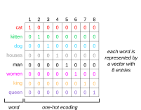
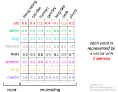
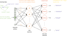
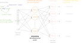
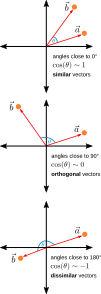

Micro-Degree Artificial Intelligence and Society
– Technical Aspects of AI –
Lecture 4.1: Text as Data

Converting Text to Numbers
- There are around 600,000 words in the Oxford English Dictionary.
- Representing text as one-hot encoded vectors is extremely inefficient.
- How can we make the encoding more efficient?
- Solution: learned "embeddings".


Learning Embeddings


Continuous Bag-Of-Words (CBOW) predicts the target-word based on its surrounding words. Inspired by Manan Suri, A Dummy’s Guide to Word2Vec, Medium.
Advantages of Embeddings
- We need far fewer dimensions (typically between 100 and 1000) to represent a word.
- Words that are similar to each other are located at similar positions in the embedding space. The cosine similarity of their embedding vectors is very high.
- We can "calculate" with embedding vectors.

Calculating with Embeddings
"Man" relates to "Woman" in the vector space as "Brother" relates to "Sister".
Summary
- To use text as data for machine learning, we first need to convert it into numbers.
- This is done using embeddings - vectors with 100 to 1000 dimensions that represent a word in the context of its language.
- Embeddings are learned using neural networks and large amounts of naturally occurring text.
- The embedding vectors of words that have similar meanings show high cosine similarity - the words are located at similar points in the embedding space.